Reference attached to the board: the master floor plan below (and the canal's views sheet).
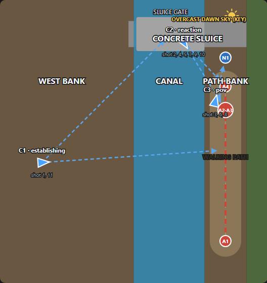
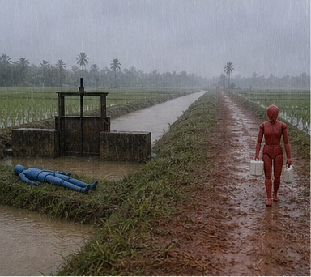
Seen from camera C1 on the master floor plan (the triangle labelled C1, the establishing setup): the camera stands there at standing eye height and looks toward the walking path, 7.0 m away, at eye angle, through a 24 mm lens. The camera does not move. Framing: a wide shot: the place around them, every person full length and small in the frame.
The red mannequin (Aruni) is walking, at A1 on the plan: at frame right, 7.6 m from the camera, its head turned to frame left, looking at the walking path toward the centre; the eyes are off the lens, never into the camera. The blue mannequin (Nimal) is lying still, at N1 on the plan: at frame left, 8.1 m from the camera, its head turned to frame left. The moment: Aruni is walking, the small medical bag hanging beside Aruni's left thigh, eyes on walking path, upright, steady steps, eyes lowered toward the wet path. Nimal is lying still, the small metal key concealed inside Nimal's curled right hand, resting on the bank toward Aruni, still, eyes closed, head toward the canal, right hand curled toward the path.
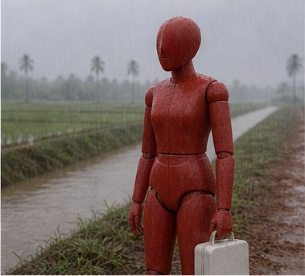
Seen from camera C2 on the master floor plan (the triangle labelled C2, the reaction setup): the camera stands there at seated eye height and looks toward Aruni (pin A2), 3.1 m away, at low angle, through a 65 mm lens. The camera does not move. Framing: a medium shot: from the waist up; the frame cuts at the waist.
The red mannequin (Aruni) is standing, at A2 on the plan: at frame centre, 3.1 m from the camera, its head toward the camera, looking at Nimal toward frame left; the eyes are off the lens, never into the camera. Outside this frame (do not paint): Nimal. The moment: Aruni is standing, the small medical bag hanging beside Aruni's left thigh, eyes on Nimal, feet planted, chin slightly raised, attention arrested.
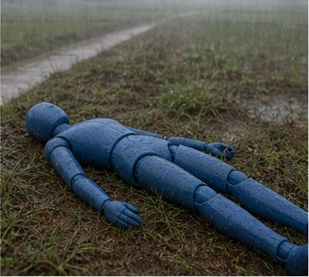
Seen from camera C3 on the master floor plan (the triangle labelled C3, the pov setup): the camera stands there at standing eye height and looks toward Nimal (pin N1), 1.7 m away, at high angle, through a 35 mm lens. The camera does not move. Framing: a full shot: each person's whole body, head to feet (or the whole kneeling or lying body), fills most of the frame's height.
The blue mannequin (Nimal) is lying still, at N1 on the plan: at frame centre, 1.7 m from the camera, its head away from the camera. Outside this frame (do not paint): Aruni. The moment: Nimal is lying still, the small metal key concealed inside Nimal's curled right hand, resting on the bank toward Aruni, still, eyes closed, face turned upward.
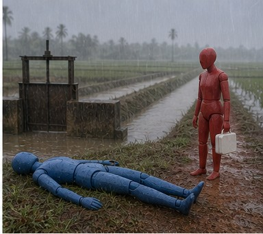
Seen from camera C2 on the master floor plan (the triangle labelled C2, the reaction setup): the camera stands there at seated eye height and looks toward Aruni (pin A3), 3.1 m away, at eye angle, through a 28 mm lens. The camera does not move. Framing: a full shot: each person's whole body, head to feet (or the whole kneeling or lying body), fills most of the frame's height.
The red mannequin (Aruni) is standing, at A3 on the plan: at frame centre, 3.1 m from the camera, its head toward the camera, looking at Nimal toward frame left; the eyes are off the lens, never into the camera. The blue mannequin (Nimal) is lying still, at N1 on the plan: at frame left, 1.7 m from the camera, its head turned to frame left. The moment: Aruni is standing, the small medical bag hanging beside Aruni's left thigh, eyes on Nimal, weight gathered forward, expression contained. Nimal is lying still, the small metal key concealed inside Nimal's curled right hand, resting on the bank toward Aruni, still, eyes closed, curled right hand nearest Aruni.
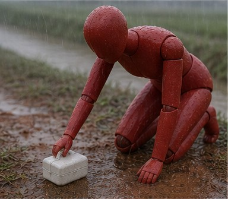
Seen from camera C2 on the master floor plan (the triangle labelled C2, the reaction setup): the camera stands there at seated eye height and looks toward Aruni (pin A4), 2.3 m away, at eye angle, through a 100 mm lens. The camera does not move. Framing: a medium close-up: head and chest only; the frame cuts at mid-chest.
The red mannequin (Aruni) is lowering onto the knees, at A4 on the plan: at frame centre, 2.3 m from the camera, its head turned to frame left, looking at Nimal toward frame left; the eyes are off the lens, never into the camera. Outside this frame (do not paint): Nimal. The moment: Aruni is lowering onto the knees, the small medical bag hanging beside Aruni's left thigh, eyes on Nimal, knees folding, torso inclined forward, right hand reaching low. Under way at this instant: Aruni lowers her knees and torso while bringing the medical bag toward the path.
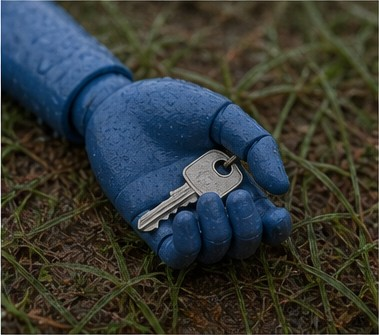
Seen from camera C3 on the master floor plan (the triangle labelled C3, the pov setup): the camera stands there at standing eye height and looks toward the small metal key, 1.7 m away, at high angle, through a 200 mm lens. The camera does not move. Framing: an insert: the object (and the hand holding it) fills the frame, nothing else.
The blue mannequin (Nimal) is lying still, at N1 on the plan: at frame centre, 1.7 m from the camera, its head away from the camera. Outside this frame (do not paint): Aruni. The moment: Nimal is lying still, the small metal key between Nimal's loosely curled right fingers, with the engraved face exposed beneath Aruni's touching fingertips, still, eyes closed, fingers loosely curled around the exposed key. Fill the frame with the small metal key; only the part of a mannequin next to it shows.
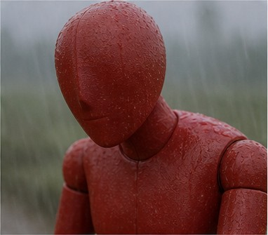
Seen from camera C2 on the master floor plan (the triangle labelled C2, the reaction setup): the camera stands there at seated eye height and looks toward Aruni (pin A4), 2.3 m away, at eye angle, through a 135 mm lens. The camera does not move. Framing: a close-up: the face fills the frame; the frame cuts at the shoulders.
The red mannequin (Aruni) is kneeling, at A4 on the plan: at frame centre, 2.3 m from the camera, its head turned to frame left, looking at the small metal key toward frame left; the eyes are off the lens, never into the camera. Outside this frame (do not paint): Nimal. The moment: Aruni is kneeling, eyes on small metal key, brows drawn slightly, breath held, fingertips still against his hand.
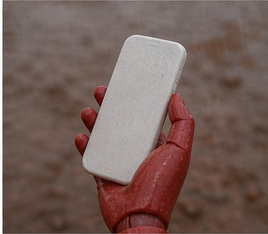
Seen from camera C3 on the master floor plan (the triangle labelled C3, the pov setup): the camera stands there at standing eye height and looks toward the phone, 0.7 m away, at high angle, through a 135 mm lens. The camera does not move. Framing: an insert: the object (and the hand holding it) fills the frame, nothing else.
The red mannequin (Aruni) is kneeling, at A4 on the plan: at frame centre, 0.7 m from the camera, its head , looking at the phone toward the centre; the eyes are off the lens, never into the camera. Outside this frame (do not paint): Nimal. The moment: Aruni is kneeling, the phone held low before Aruni, screen tilted toward her, eyes on phone, phone held low, eyes lowered, jaw set. Fill the frame with the phone; only the part of a mannequin next to it shows.
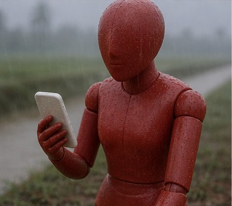
Seen from camera C2 on the master floor plan (the triangle labelled C2, the reaction setup): the camera stands there at seated eye height and looks toward Aruni (pin A4), 2.3 m away, at eye angle, through a 85 mm lens. The camera does not move. Framing: a medium close-up: head and chest only; the frame cuts at mid-chest.
The red mannequin (Aruni) is kneeling, at A4 on the plan: at frame centre, 2.3 m from the camera, its head , looking at the phone toward the centre; the eyes are off the lens, never into the camera. Outside this frame (do not paint): Nimal. The moment: Aruni is kneeling, the phone held low before Aruni, screen tilted toward her, eyes on phone, right wrist steady, thumb resting against the phone edge.
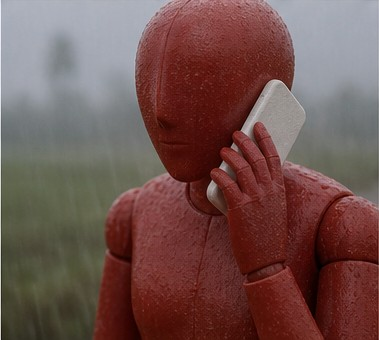
Seen from camera C2 on the master floor plan (the triangle labelled C2, the reaction setup): the camera stands there at seated eye height and looks toward Aruni (pin A4), 2.3 m away, at eye angle, through a 135 mm lens. The camera does not move. Framing: a close-up: the face fills the frame; the frame cuts at the shoulders.
The red mannequin (Aruni) is kneeling, at A4 on the plan: at frame centre, 2.3 m from the camera, its head turned to frame left, looking at Nimal toward frame left; the eyes are off the lens, never into the camera. Outside this frame (do not paint): Nimal. The moment: Aruni is kneeling, the phone held low before Aruni, screen tilted toward her, eyes on Nimal, phone against right ear, mouth closed, gaze fixed low.
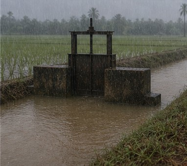
Seen from camera C1 on the master floor plan (the triangle labelled C1, the establishing setup): the camera stands there at standing eye height and looks toward the sluice gate, 6.9 m away, at eye angle, through a 85 mm lens. The camera does not move. Framing: a wide shot: the place around them, every person full length and small in the frame.
Nobody is in this frame: no mannequin and no person anywhere in it. Outside this frame (do not paint): Aruni, Nimal.